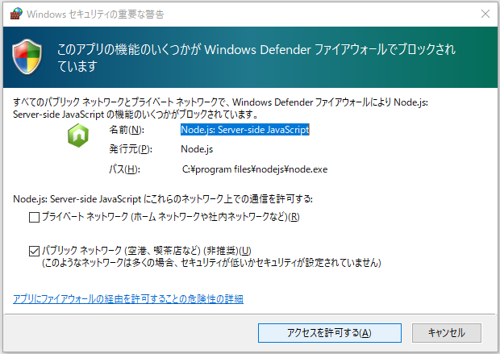
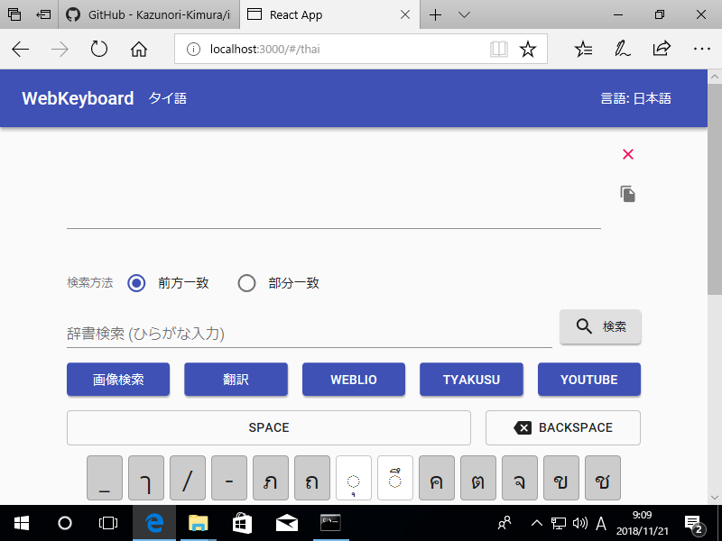

ビルド方法#
ソースコードをWebサーバーで公開可能な形に変換することをビルドといいます。
Windowsを例に解説しますが、他のOSにおいても同様になります。
コマンドプロンプトの起動とフォルダ移動#
スタートメニューからコマンドプロンプトを起動します。
(見つからない場合、スタートメニューでcmdと検索すると表示されます。)

ソースコードがあるフォルダに移動します。
> cd C:¥project¥input-clue¥react-keyboard
Note
ここではダウンロードしたソースコードを C:¥project¥input-clue に展開した前提で進めていきます。実際にダウンロードしたパスに読み替えてください。
ライブラリのインストール#
ビルドに必要となるライブラリをダウンロード・インストールします。
> npm install
ダウンロードにはしばらく時間がかかります。
動作確認#
次のコマンドを実行するとブラウザが起動し、WebKeyboardが表示されます。
> npm start
Warning
辞書ファイルのサイズが大きい、多くの言語の辞書ファイルがある、といった場合はブラウザが起動するまでに時間がかかります。
初回起動時に以下のようなファイアウォールの設定が表示されることがあります。

アクセスを許可する をクリックして続行してください。
きちんと画面が表示されれば、適切にライブラリがインストールされています。

動作確認が終わったらブラウザを終了し、コマンドプロンプトで Ctrl+C を押してください。プログラムが終了します。
公開URLの設定#
WebKeyboardを公開するURLを設定します。
C:¥project¥input-clue¥react-keyboard¥package.json をテキストエディタで開きます。
Tips
テキストエディタはUTF-8のファイルが扱えるものであれば何でも構いませんが、Windows標準のメモ帳は機能が貧弱なので Visual Studio Code、サクラエディタ あたりがオススメです。
96行目に homepage という項目がありますので、ここのURLを管理しているWebサーバーのURLに書き換えてください。
"homepage": "https://kazunori-kimura.github.io/input-clue",
ビルド#
コマンドプロンプトで次のコマンドを実行するとビルドが開始されます。
> npm run build
C:¥project¥input-clue¥react-keyboard¥build というフォルダが生成され、そこにビルドされたファイルが出力されます。
この内容をすべてWebサーバーにアップロードしてください。